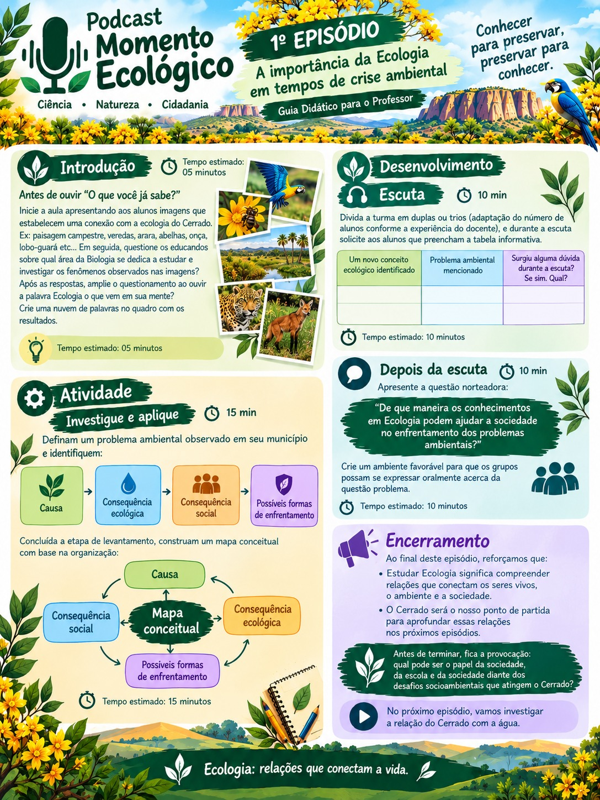
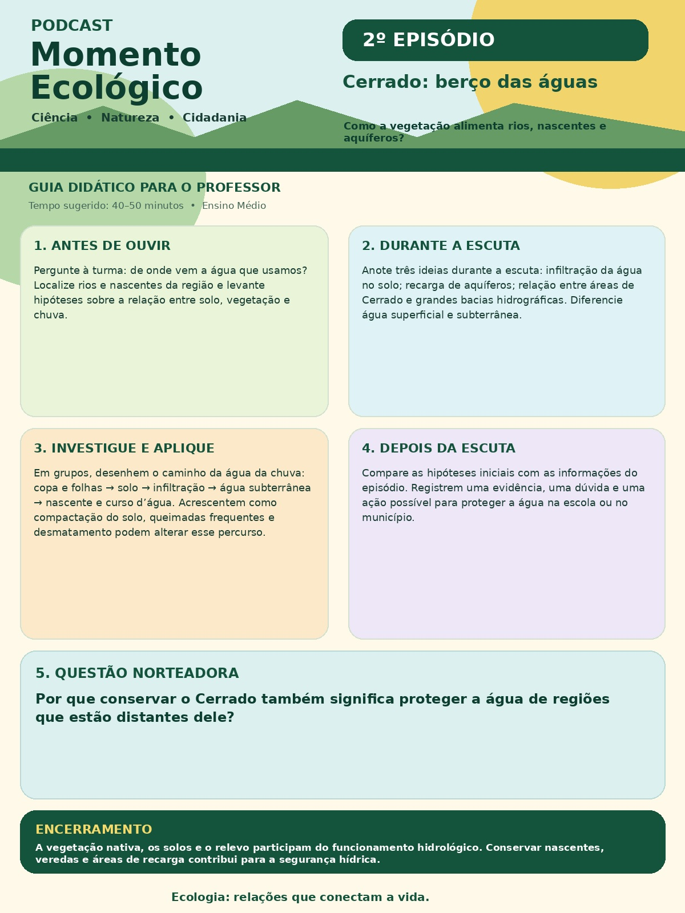
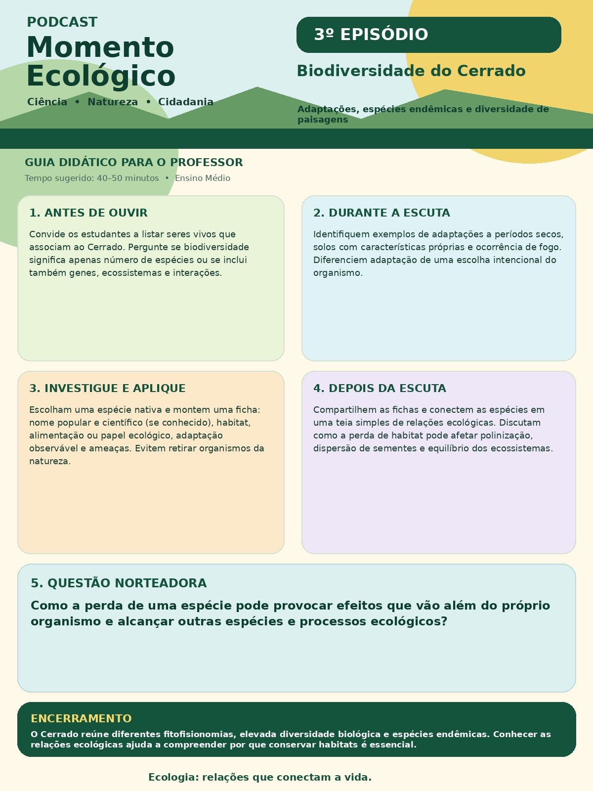
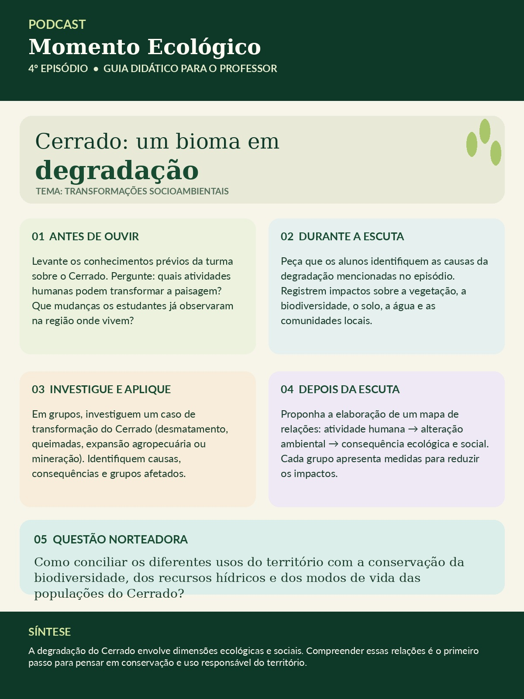
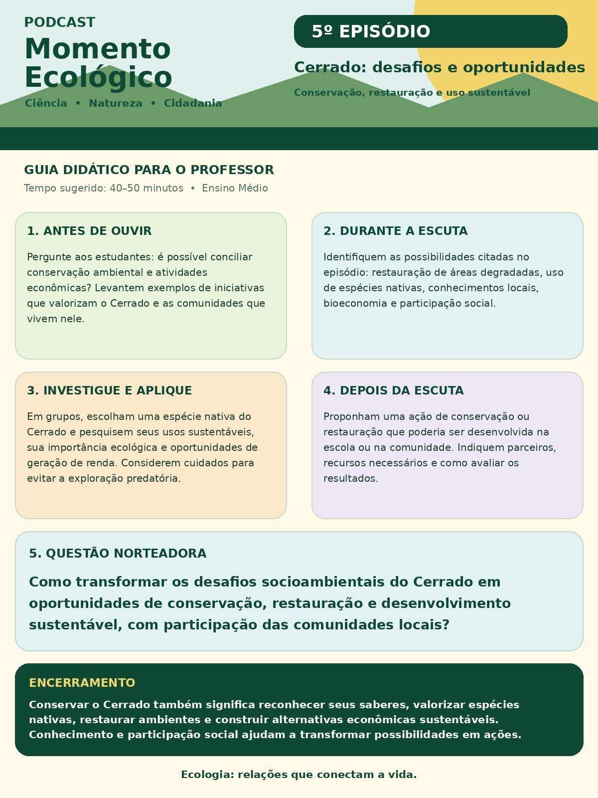

EPISÓDIO 01
A importância da Ecologia em tempos de crise ambiental
Guia didático com propostas de introdução, escuta, atividade investigativa, reflexão e encerramento.
Conhecer para preservar,
preservar para conhecer.
O guia didático foi pensado para orientar professores da Educação Básica na utilização pedagógica dos episódios, ampliando a intencionalidade do recurso sonoro.
GUIA DIDÁTICO
O material reúne orientações para utilização do Podcast Momento Ecológico, propostas de mediação e possibilidades de atividades relacionadas aos temas dos episódios.
A organização busca apoiar o professor na integração dos episódios ao planejamento das aulas e no desenvolvimento de atividades de problematização, investigação e aprofundamento dos conteúdos.
MATERIAIS DE APOIO
Os materiais de apoio complementam os episódios do podcast e podem ser visualizados e baixados para utilização em sala de aula.

Guia didático com propostas de introdução, escuta, atividade investigativa, reflexão e encerramento.

Guia didático com questões norteadoras, roteiro de escuta, atividade sobre o percurso da água e reflexão sobre a conservação hídrica.

Guia didático com orientações para a escuta, investigação de espécies nativas, relações ecológicas e reflexão sobre a perda de habitat.

Guia didático com orientações para discutir as transformações socioambientais do Cerrado, os impactos sobre a biodiversidade, o solo, a água e as comunidades locais, além de propostas de investigação.

Guia didático com propostas de escuta, investigação sobre espécies nativas e bioeconomia, planejamento de ações de restauração e reflexão sobre conservação e participação social.
POSSIBILIDADES DOCUMENTADAS
Indicações para integrar o podcast à prática pedagógica.
Possibilidades de contextualização, problematização e reflexão.
Possibilidades de aplicação relacionadas aos temas dos episódios.
Subsídios para aprofundar os conteúdos e mobilizar perguntas.
Integração dos episódios ao planejamento das aulas de Ecologia.
Articulação entre conhecimento científico, tecnologia e questões socioambientais do Cerrado.
PRESSUPOSTOS
O desenvolvimento do produto é orientado por pressupostos relacionados à aprendizagem significativa, curiosidade epistemológica, alfabetização científica e contextualização do ensino de Ecologia.